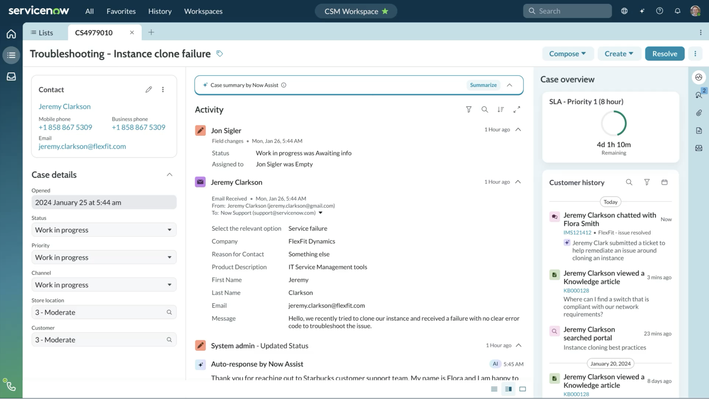

My Role and Contributions
As Design Architect, I establish the foundational design language and govern pattern standards across the CRM business unit and its customers. I partner closely with product leadership to define and align product direction across each release, while overseeing the component system and driving a structured review process to evaluate pattern usage and extensibility across the design organization.
Service Design
Scope defintion across the business
For large-scale initiatives, establishing a shared objective across the organization is foundational to success. I partnered closely with Research and Product Management to co-lead a 40+ person workshop aimed at defining the scope and direction of our initiative. The three-day collaborative session brought together cross-functional stakeholders from multiple business units, ensuring alignment on definitions, goals, and targets from the outset.


Design & Craft
Designing with intent
As Design Lead, I drove the end-to-end design process through creative direction, hands-on contribution, and structured project management.
- Led cross-functional collaboration with stakeholders including VPs across Product Management, Design, and Engineering.
- Established the initial creative direction and identified opportunities to address competitive gaps in the market.
- Enhanced the user journey and improved overall productivity, with findings validated through user research.
- Developed foundational design patterns and best practices to guide both design thinking and implementation.

Enablement
Scaling patterns with Horizon Design System
CSM Workspace is a platform built to support and extend industry-specific use cases. Its extensible design architecture enables the product to serve diverse personas and scale to meet the evolving needs of customers. As Design Architect, I developed the foundational design guidelines that empower both internal teams and customers to confidently adopt the platform — ensuring consistency, scalability, and extensibility across implementations. View guidelines on Horizon Design System
Thought Leadership
Customer Success
A thoughtful implementation of CSM Workspace is critical to customer success. Leveraging deep expertise in Workspace architecture, I co-led two public workshops at ServiceNow's Knowledge Conference in 2024 and 2025 — hands-on sessions designed to equip customers with expert guidance and the product knowledge needed to plan their implementations effectively. Both sessions ranked among the highest-rated at the conference.

More project information available upon request.